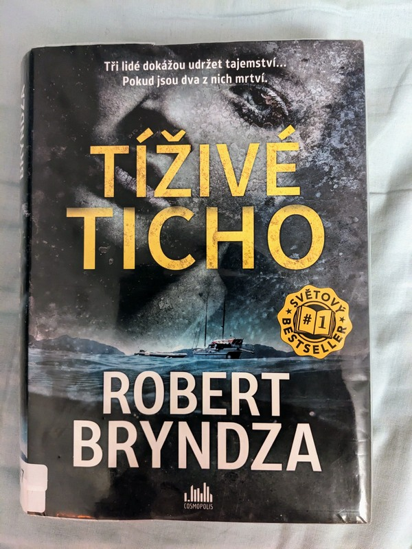
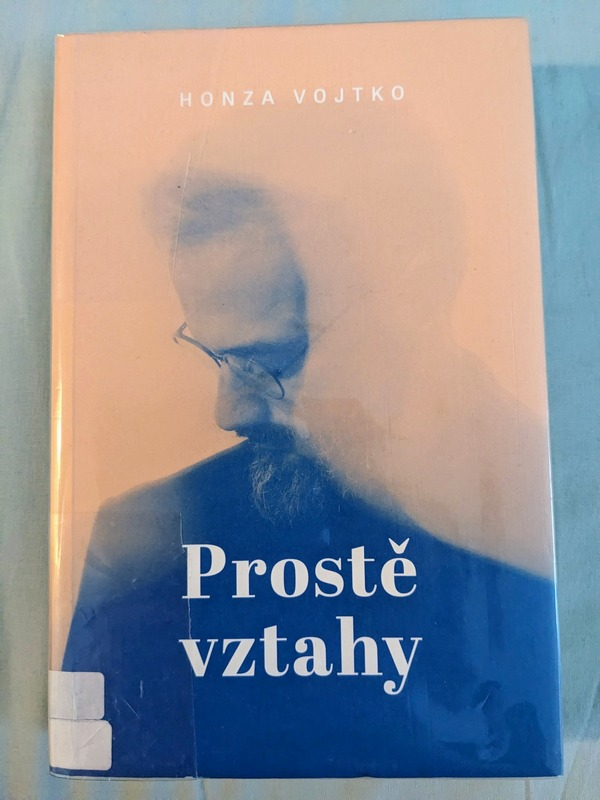
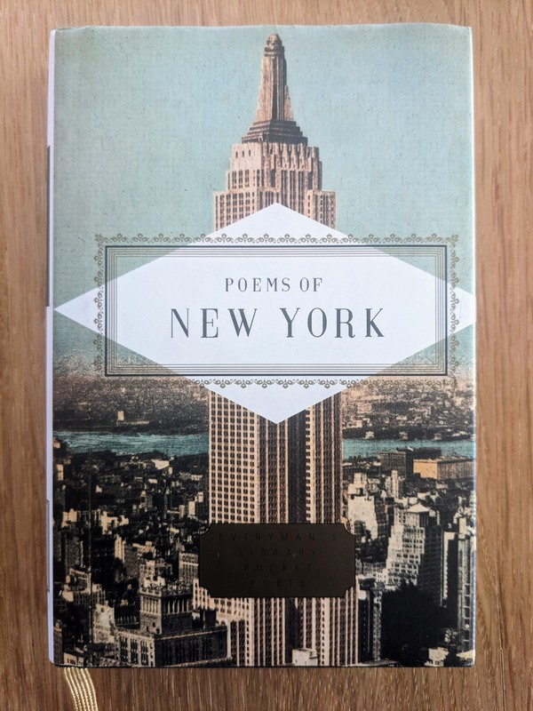
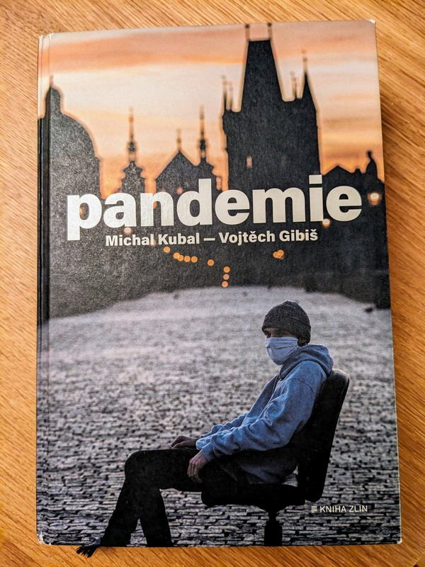
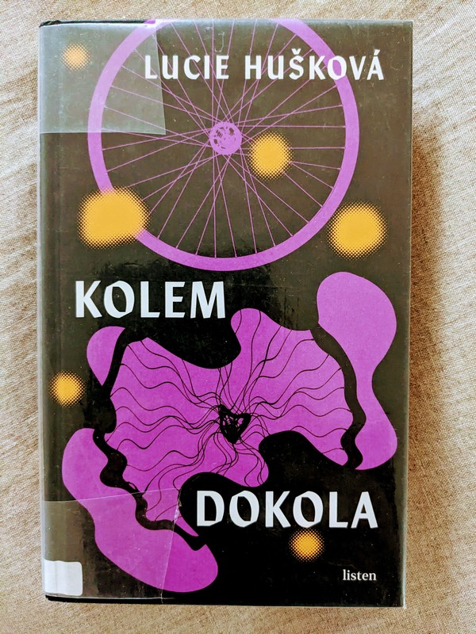
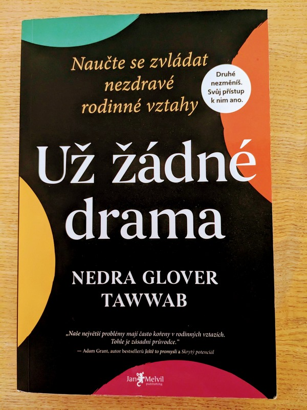
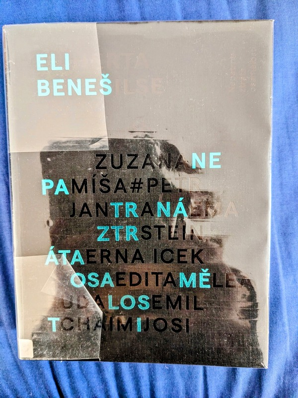
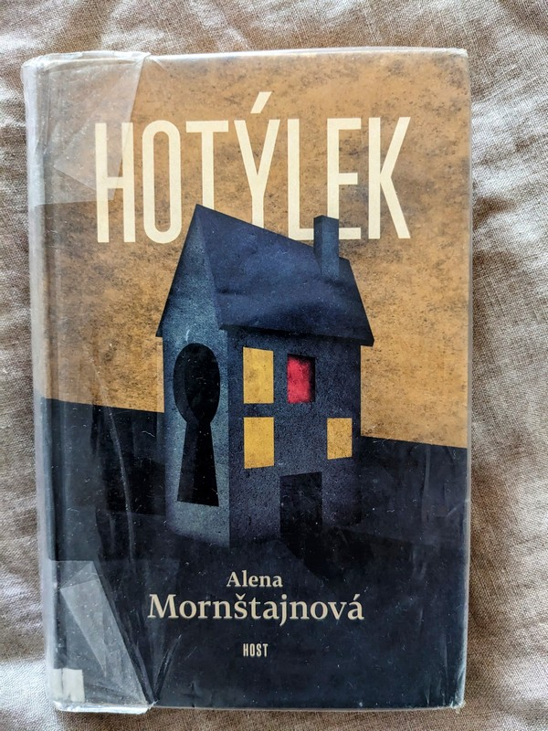

Jaro už je v plném proudu a já s mírným skluzem přináším tipy na knížky, s kterými jsem strávila uplynulou zimu. Opět to bude trochu všehochuť od beletrie přes žurnalistiku a tentokrát nechybí dokonce ani trocha poezie :-)
Robert Bryndza – Tíživé ticho
Tak k této knize jsem přišla jako slepý k houslím, když mi ji nabídla k přečtení kolegyně z práce a kdo jsem já, abych odmítla nabízenou knihu :-D! Jméno spisovatele Roberta Bryndzy mi nebylo neznámé, tak nějak jsem tušila, že se věnuje detektivnímu žánru, který jako čtenář běžně nevyhledávám, ale říkala jsem si, že to aspoň bude nová čtenářská zkušenost. Hlavní hrdinka Maggie je úspěšnou lékařkou, která se pouští do rozplétání záhadných okolností smrti jejího manžela, kterou policie uzavře jako sebevraždu – ona je však přesvědčená, že v tom musí mít prsty někdo cizí. Napětí ani čtivost se Tíživému tichu upřít nedá, ale spousta věcí mi v knize přišla nereálná a až moc přitažená za vlasy. Ději chyběla určitá uvěřitelnost, těch „náhod“ tam zkrátka bylo za mě až moc. Jako fajn oddechovka na víkendové lenošení to není špatná volba, ale úplně mě to nenalákalo přečíst si od autora cokoliv dalšího.

Honza Vojtko – Prostě vztahy
Pro velký úspěch zase něco z ranku populární psychologie. Musím přiznat, že tentokrát se mi do knihy hůř začítalo, místy mi přišla až moc „odborná“ v tom smyslu, že v ní jsou často citovány např. různé zahraniční studie a já mám na autorovi raději spíš tu jeho „neformální“ stránku, pasáže, kde je osobní nebo se věnuje konkrétním případům ze své praxe. To ale nic nemění na tom, že kniha je výborná a nutící k zamyšlení, dotýká se tématu vztahů z mnoha různých úhlů pohledu, ať už je to vztah k lidem, ke zvířatům, věcem, penězům či práci.

Poems of New York
Poezii jsme tu dlouho neměli :-) Tohle je ovšem ještě úplně jiný level, neb se jedná o sbírku básní v angličtině, kterou jsem dostala před lety k Vánocům od bráchy a Jenn. Spojujícím prvkem všech básní je, jak již název napovídá, pocta americké metropoli a sbírka je uspořádána chronologicky od známých amerických autorů jako je Walt Whitman či Allen Ginsberg až po současné básníky.

Michal Kubal, Vojtěch Gibiš – Pandemie
Kronika jedné éry… Tak by možná mohl znít podtitul této skutečně obsáhlé publikace, jejíž objem ji předurčuje k tomu, abyste při jejím čtení posilovali své ruce. Fakt to není kniha do kabelky :-D! Informačně je nabitá neméně. Mimořádně zajímavá mi přišla zejména úvodní pasáž, popisující situaci v Číně v době, kdy u nás se ještě nedělo zdánlivě nic, i konkrétní příběhy jak čínských lékařů, kteří na režimem ututlávanou hrozbu hned od začátku upozorňovali, tak i prvních čínských pacientů. Velmi detailně je pak rozebíráno, jak se virus postupně šířil do dalších částí světa, následují katastrofické scény z Itálie a pak už se samozřejmě rozbíhá příběh, který má většina z nás ještě stále v živé paměti – pacient nula v Čechách a restriktivní opatření, která vzápětí následovala… Je pozoruhodné, jak rychle lidská paměť vytěsňuje – zpětným pohledem mi některé pasáže přišly až přehnaně dramatické či patetické, ale ta doba taková skutečně byla. A bylo vlastně trochu děsivé se se čtením této knihy do jara 2020 znovu vracet. Emočně nejnáročnější ale byly příběhy konkrétních lidí – ne všechny měly bohužel šťastný konec. Tak či tak je Pandemie pozoruhodným svědectvím o tom bezprecedentním čase, který nás všechny nějakým způsobem poznamenal, a precizně odvedenou novinářskou prací.

Lucie Hušková - Kolem dokola
Po přečtení autorčiny prvotiny Símka jsem byla velmi zvědavá na další její tvorbu a musím říct, že jsem stále stejně nadšená, byť se mi Símka líbila možná o malinko víc. Ve svém novém románě přichází autorka s ještě těžším tématem - první polovina knihy je vyprávěna Zojkou, mladou ženou, která při automobilové nehodě smrtelně zraní cyklistu a nyní se potácí životem a hledá způsob, jak se s tímto traumatickým zážitkem vyrovnat a jít dál. Druhou polovinu románu pak sledujeme osudy cyklistovy pozůstalé rodiny z pohledu jeho dospívajícího syna. Kniha se mi nečetla úplně lehce a Zojčin sebedestruktivní postoj k celé situaci mě úplně drásal – z toho důvodu už bych po ní znovu asi nesáhla. Na další autorčiny literární počiny se ale těším moc.

Nedra Glover Tawwab - Už žádné drama
Pod stromeček jsem si letos skromně přála jen tuto jedinou knihu – jak jinak, než z nakladatelství Jan Melvil O:-) O různých úskalích rodinných vztahů hovoří velmi srozumitelně a prakticky, obsáhne širokou škálu více či méně závažných či toxických situací a nabízí i konkrétní tipy, jak se v nich zachovat, jak reagovat… Asi vám to nenahradí posezení někde na terapii :-), ale věřím, že přečíst si knihu může být ku prospěchu komukoliv.

Eli Beneš – Nepatrná ztráta osamělosti
Tak toto byla asi ta nejzajímavější a nejoriginálnější kniha s tematikou holocaustu, kterou jsem doposud četla, a přestože k ní píšu tuto „minirecenzi“ s už značným časovým odstupem, stále ve mně rezonuje. Snad je to i tím, že začíná tam, kde knihy na toto téma obvykle končí – tedy na konci války, kdy se hlavní hrdina židovského původu Petr Stein vrací z koncentračního tábora, respektive se mu podaří zázrakem uprchnout z pochodu smrti, a v Praze čeká na návrat ostatních členů své rodiny. Čtenář samozřejmě tak nějak tuší, že marně, ale Petrův naivní optimismus v něm také dlouho nechává klíčit semínko naděje. Mimořádně zajímavé mi přišlo líčení, jak vlastně takový návrat přeživších do rodného města prakticky vypadal – na koho se mohli obrátit, když neměli doslova nic, jak fungovala potravinová pomoc, kde bylo možné se ubytovat, když ve „vašem“ domě už bydlel někdo jiný, jak vypadalo v té době pátrání po dalších příbuzných… Ten návrat měl v sobě tolik dalších tíživých aspektů! Samozřejmě se čtenář postupně skrze „flashbacky“ dozvídá, čím vším si hrdina i jeho rodina za války prošli a s odpovědí na palčivou otázku, jak se mu podařilo tohle všechno vůbec přežít, si autor dává načas. Román je ale minimálně v prvních dvou třetinách naprosto neodložitelný. Ke konci pak možná trochu ztrácí dech a - píší to všichni, souhlasím s tím i já - kdyby byla kniha o pár desítek stran tenčí, nebylo by to na škodu. Ale za ten závěr jí to, myslím, odpustíte :-)

Alena Mornštajnová – Hotýlek
Rodinná sága Hotýlek se za mně zařadí mezi ty méně zajímavé knihy autorky. Přestože byla velmi čtivá, nevtáhla mě natolik, abych k některé z hlavních postav pocítila sympatie či alespoň upřímný zájem o její osud. Vlastně mi dost těch rodinných osudů přišlo trochu přitažených za vlasy za účelem toho udělat příběh originálním – nechybí tam osudová láska, vražda, pomsta, alkoholismus, nemanželské dítě, odchod k cirkusu… Taková trochu telenovela, no :-D Alena Mornštajnová je přes to všechno zdatná vypravěčka a píše hezkým jazykem, takže čas strávený nad její knihou nemůže být ztracený, osobně bych ale doporučila z jejího pera jiné tituly.
